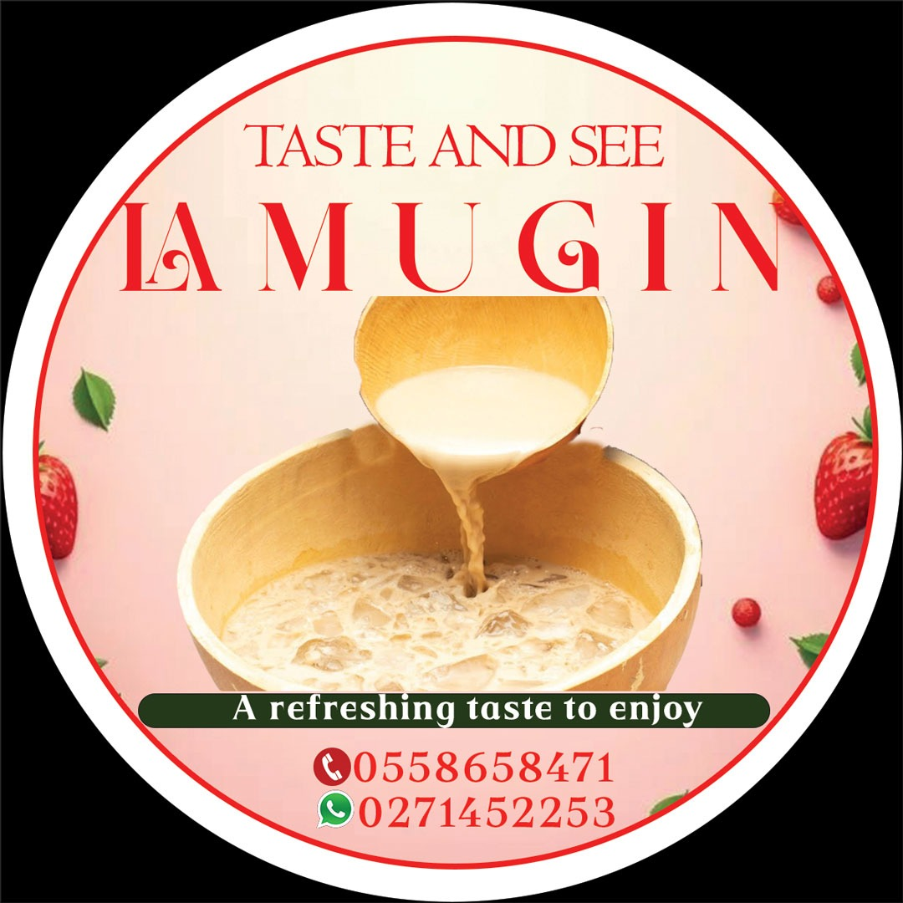
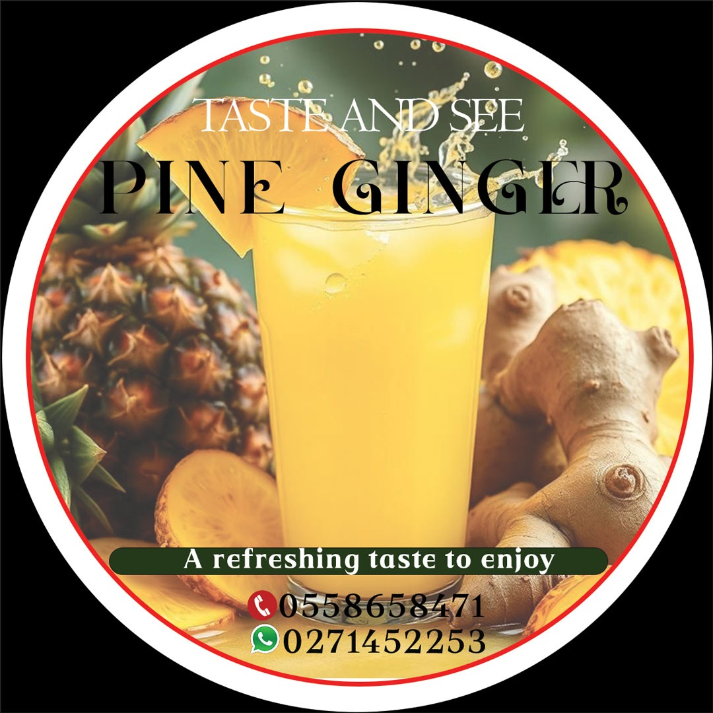

Summmary
I am a motivated and hardworking Senior High School graduate with a background in Home Economics who is eager to build professional experience, contribute positively to an organization, and develop practical skills. I possess strong communication and time management abilities and I also work well in a team with a willingness to learn and grow
Experience
Entrepreneur & Sales Professional
- Launched and grew a small beverage business specializing in Asaana, Lamugin, and Sobolo for 2.5 years and counting
- Managed end-to-end operations including production, sales, customer relations, and inventory control
- Built a loyal customer base through reliable service and product consistency
Temporary Sales Assistant
Bakery shop; developed customer service and retail skills
Education
- Ada Senior High Technical School, Ada West - Programme: Home Economics (Completed: 2023)
- St. Joseph Anglican Basic School, Bubiashe - Accra - (Completed: 2020)
Skills
- Good communication and interpersonal skills
- Teamwork and cooperation
- Basic computer knowledge
- Time management
- Ability to learn quickly
- Hardworking and respectful
Certificate
- Wassec Certificate(shs: 2023)
- St. Joseph Anglican Basic School, Bubiashe - Accra(jhs: 2020)
portfolio


